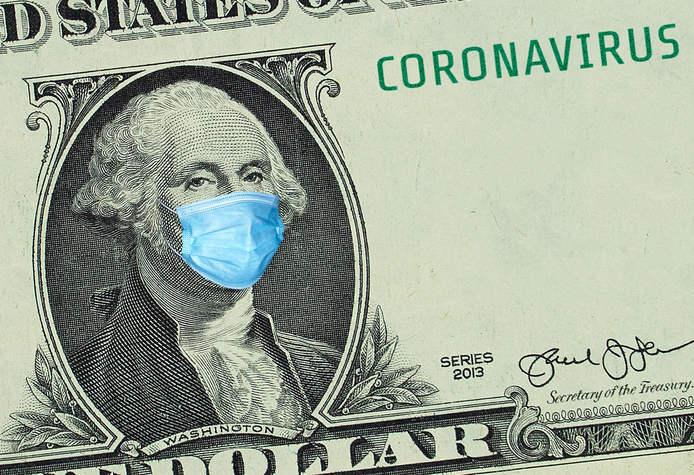

Cuộc bầu cử ngày 3/11, cử tri Mỹ sẽ phải lựa chọn giữa đương kim Tổng thống, ứng viên đảng Cộng hòa Donald Trump với đối thủ Joe Biden của đảng Dân chủ. Ông Trump, 74 tuổi và ông Biden, 77 tuổi mang những quan điểm trái ngược rõ rệt và cách tiếp cận khác nhau trong việc giải quyết một số vấn đề nổi cộm nhất mà nước Mỹ phải đối mặt, từ kinh tế tới địa chính trị….
Dưới đây là cái nhìn chi tiết về chính sách và chương trình nghị sự của hai ứng viên tổng thống Mỹ trong 7 lĩnh vực chính.
Đại dịch Covid-19 khiến hàng chục triệu người Mỹ rơi vào cảnh mất việc làm, chấm dứt chuỗi tăng trưởng dài nhất từng được ghi nhận trong lịch sử và tác động mạnh tới cơ hội tái đắc cử của Tổng thống Trump.
Tái mở cửa nền kinh tế
Mở cửa càng nhanh càng tốt
Thúc đẩy các bang mở cửa trở lại càng nhanh càng tốt mặc dù dịch bệnh hoành hành.
Thận trọng
Thận trọng trong việc mở cửa trở lại nền kinh tế khi chưa thể tăng cường các xét nghiệm Covid-19.
Đưa nền kinh tế trở lại đúng hướng
Kích thích một lần
Kể từ khi Covid-19 bùng lên, Tổng thống Trump đã ký luật hỗ trợ nền kinh tế với hàng nghìn tỷ USD viện trợ một lần cho các doanh nghiệp, cá nhân và các chính quyền địa phương.
Để hỗ trợ các biện pháp kích thích này, ông Trump đưa ra nhiều giải pháp, bao gồm cả cắt giảm thuế.
Chi thêm hàng nghìn tỷ USD
Đề xuất chi hàng nghìn tỷ USD để tạo việc làm mới trong lĩnh vực năng lượng sạch, sản xuất và chăm sóc sức khỏe đồng thời giảm bớt bất bình đẳng kinh tế chủng tộc.
Muốn Washington hỗ trợ nhiều hơn nữa cho các bang trong việc chi trả trợ cấp thất nghiệp và cho rằng các hộ gia đình cũng như chính quyền địa phương cần được hỗ trợ nhiều hơn nữa để vượt qua tình trạng đóng cửa.
Thuế và lương
Không tăng thuế
Việc cắt giảm thuế năm 2017 là ví dụ cho cách tiếp cận của ông Trump trong việc kích thích tăng trưởng kinh tế. Việc cắt giảm thuế tiền lương sẽ tăng thu nhập của hầu hết những người Mỹ đang làm việc.
Chiến dịch tranh cử của ông Trump đang công kích chính sách tăng thuế trong khi nền kinh tế chật vật phục hồi.
Tăng lương tối thiểu
Đưa ra những chỉ trích, cho rằng việc cắt giảm thuế năm 2017 của Chính quyền Trump là mang lại quá nhiều lợi ích cho những người giàu có và các tập đoàn.
Cam kết đảo ngược một số quy định cắt giảm thuế năm 2017 của ông Trump bằng cách tăng thuế cận biên đối với người có thu nhập cao nhất về mức 39,6% so với 37% như hiện nay.
Hỗ trợ nâng mức lương tối thiểu quốc gia lên 15 USD/giờ từ mức 7,25 USD/giờ và gia tăng các khoản miễn thuế cho người lao động có thu nhập thấp hơn.
Thương mại
Thúc đẩy sản xuất trong nước
Một trong những vấn đề cốt lõi được ông Trump nhắc tới khi chạy đua vào Nhà Trắng năm 2016 là thúc đẩy sản xuất ở chính nước Mỹ.
Cho rằng những khó khăn của Mỹ trong việc mua các trang thiết bị y tế cần thiết giữa đại dịch là lý do để khuyến khích các công ty Mỹ không đi ra bên ngoài.
Thúc đẩy sản xuất trong nước
Đề xuất kế hoạch sản xuất tại Mỹ của riêng mình vào tháng 7, ông Biden cam kết chi 700 tỷ USD cho các sản phẩm mà Mỹ nghiên cứu và sản xuất. Theo ông Biden, kế hoạch này có thể mang đến 5 triệu việc làm hoặc ít nhất là người lao động có thêm tiền lương trong đợt đại dịch chết người.
Chỉ trích cuộc chiến thuế quan của ông Trump với Trung Quốc là có hại cho người tiêu dùng và nông dân Mỹ.
Bỏ phiếu cho Hiệp định Thương mại Tự do Bắc Mỹ (NAFTA) khi còn là Thượng nghị sĩ.
Đầu tư xanh
Không đề cao
Ông Trump cũng ủng hộ chi tiêu nhiều hơn cho đường xá, cầu và sân bay của Mỹ nhưng không tỏ ra mặn mà với đầu tư “xanh”.
2.000 tỷ USD cho 4 năm
Ông Biden tuyên bố sẽ chi 2.000 tỷ USD trong 4 năm để cải tiến cơ sở hạ tầng, xây dựng hệ thống vận tải công cộng không khí thải, xây dựng những ngôi nhà bền vững và tạo việc làm trong lĩnh vực năng lượng sạch.
Ông Trump và ông Biden có quan điểm trái ngược nhau về tư pháp hình sự và phân biệt chủng tộc. Nổi lên trong cuộc bầu cử năm 2020, vấn đề vốn ít được để tâm này lại có thể đóng vai trò quan trọng cho các ứng viên trong cuộc đua vào Nhà Trắng.
Đa dạng và hòa nhập
Ít cố vấn da màu
Có rất ít người da đen trong số các cố vấn và nhân viên Nhà Trắng dưới thời ông Donald Trump.
Hứa hẹn cho sự đa dạng
Ông Biden đã cam kết rằng nội các của ông cũng như các quyết định bổ nhiệm sau này và cả việc chọn Phó Tổng thống, đều phản ánh sự đa dạng chủng tộc của nước Mỹ.
Chính sách
Pháp luật và mệnh lệnh
Đáp lại các cuộc biểu tình trên toàn nước Mỹ về cái chết của George Floyd, một công dân da màu bị cảnh sát giết hại trong lúc bắt giữ, ông Trump ra lệnh cho quân đội vào dẹp loạn và thúc giục các bang làm tương tự.
Đã ký một lệnh hành pháp để thực hiện cải cách trong hệ thống cảnh sát. Khuyến khích cảnh sát sử dụng các tiêu chuẩn mới nhất về sử dụng vũ lực, cấm ghì cổ nghi phạm trừ khi tính mạng của một sĩ quan bị đe dọa và kêu gọi thực hiện nhiều điều khác.
Người Dân chủ thì lên tiếng phê bình việc cho phép cảnh sát sử dụng biện pháp ghì cổ với một số ngoại lệ cũng như không đặt ra hạn chế với cảnh sát khi xông vào nhà nghi phạm mà không cần báo trước.
Cải cách
Cáo buộc Chính quyền Trump giám sát lỏng lẻo hoạt động của các cảnh sát vi phạm quyền công dân. Thúc đẩy cải cách quyền miễn trừ theo hướng giảm đặc quyền dành cho cảnh sát, một quy định giúp bảo vệ các sĩ quan thực thi pháp luật khỏi các vụ kiện của nạn nhân. Người phát ngôn của ông Trump nói rằng ông chủ Nhà Trắng không ủng hộ việc tước bỏ quyền này của cảnh sát.
Chống lại lời kêu gọi của các nhà hoạt động để nhằm vào cảnh sát. Thay vào đó, hứa đầu tư 300 triệu USD vào một chương trình nhằm đa dạng hơn đội ngũ sĩ quan cũng như đào tạo họ để phát triển các mối quan hệ ít đối nghịch hơn với cộng đồng.
Cải cách tư pháp hình sự
Ủng hộ
Vào năm 2018, Đạo luật First Step đã được ông Trump đặt bút ký thông qua. Nó cho phép giảm mức án tối thiểu hoặc bắt buộc, mở rộng các chương trình cai nghiện ma túy cho tù nhân và cho phép một số tù nhân được ra tù sớm nếu có hành vi tốt.
Ông Trump cũng ủng hộ một số chính sách “cứng rắn với tội phạm”, bao gồm tìm cách tái khởi động hình phạt tử hình.
Ủng hộ
Muốn loại bỏ án tử hình, biệt giam và bỏ tù những người bị cáo buộc cho tới khi họ nộp tiền bảo lãnh. Đã cam kết tài trợ 200 tỷ USD cho các tiểu bang để giảm các tệ nạn xã hội như mù chữ, lạm dụng trẻ em để đổi lấy việc giảm mức án bắt buộc tối thiểu.
Với tư cách là Thượng nghị sĩ, ông Biden đã bỏ phiếu cho luật hình sự năm 1994, điều bị các nhà phê bình cáo buộc là góp phần tống giam hàng loạt người da màu.
Giải quyết chênh lệch kinh tế chủng tộc
Tăng trưởng kinh tế cho tất cả
Ông Trump thường ca ngợi tỷ lệ thất nghiệp của người da đen, vốn đạt mức thấp kỷ lục trước khi đại dịch Covid-19 xảy ra, để nói về thành tựu của mình trong việc giải quyết chênh lệch kinh tế chủng tộc.
Đúng
Kêu gọi luật pháp đơn giản hóa trong việc kiện tụng về phân biệt đối xử khi trả lương. Tuyên bố tạo ra các biện pháp mới để cho vay và bảo vệ tài sản một cách công bằng hơn, cung cấp 300 triệu USD để tài trợ cho các thành phố trong việc giảm bớt các quy định phân biệt đối xử và tạo ra một lực lượng đặc trách để đi tìm nguyên nhân vì sao số người da màu chết vì Covid-19 cao hơn hẳn so với phần còn lại.
Ông Biden cũng cho biết sẽ yêu cầu một nhóm nghiên cứu tính toán tính khả thi của việc chi trả một khoản bồi hoàn bằng tiền mặt cho người da đen vì hậu quả của chế độ nô lệ và phân biệt chủng tộc.
Chăm sóc sức khỏe là mối quan tâm hàng đầu của các cử tri Mỹ ngay cả trước khi đại dịch Covid-19 làm hơn 173.000 người Mỹ thiệt mạng. Cuộc khủng hoảng có thể làm sáng tỏ hơn nữa sự khác biệt lớn về chính sách chăm sóc sức khỏe giữa 2 ứng viên.
Obamacare
Không ủng hộ
Ông Trump đã sử dụng quyền hành pháp cũng như các quyết định của Tòa án để phá hủy Obamacare khi đắc cử Tổng thống Mỹ. Nhiều người Cộng hòa cũng đã cố gắng phá bỏ đạo luật này.
Ông Trump chưa đề xuất một sự thay thế toàn diện cho Obamacare dù hứa sẽ xây dựng một hệ thống chăm sóc sức khỏe tốt hơn, ít tốn kém hơn.
Ủng hộ
Thề hỗ trợ Đạo luật Bảo vệ Bệnh nhân và Chăm sóc Sức khỏe Hợp túi tiền, hay còn được gọi là Obamacare. Đề xuất kế hoạch chăm sóc sức khỏe tiêu tốn 750 tỷ USD trong 10 năm và số tiền này được lấy từ việc tăng thuế người giàu.
Phản đối cách thức vận hành của đạo luật chăm sóc sức khỏe Medicare for All.
Hạ giá thuốc
Ủng hộ
Đề xuất giá dựa trên giá thành một số loại dược phẩm ở nước ngoài, nơi thuốc thường rẻ hơn ở Mỹ, để hạ giá. Tuy nhiên, nỗ lực này đã bị đình trệ.
Hỗ trợ một số hình thức nhập thuốc theo đơn từ nước ngoài để hạ giá thành.
Ủng hộ
Ủng hộ một dự luật được Hạ viện, do người Dân chủ kiểm soát, thông qua vào năm ngoái cho phép chương trình bảo hiểm y tế Medicare thương lượng giá thuốc như các công ty bảo hiểm tư nhân đã làm. Chính quyền Trump tuyên bố sẽ phủ quyết dự luật và cho rằng nó sẽ khiến các nhà sản xuất thuốc dành ít tiền hơn cho nghiên cứu và phát triển.
Hỗ trợ một số hình thức nhập thuốc theo đơn từ nước ngoài để hạ giá thành.
Mở rộng các gói chăm sóc sức khỏe
Không
Áp đặt các điều kiện khác, bao gồm cả yêu cầu công việc và nhiều biện pháp khác, để nâng cao tiêu chuẩn hưởng bảo hiểm của một người. Các chuyên gia cho rằng nó sẽ khiến ít người được hưởng bảo hiểm hơn.
Ủng hộ
Đề xuất giảm độ tuổi đủ điều kiện tham gia Medicare từ 65 xuống 60. Một sự thay đổi như vậy có thể giúp 20 triệu người Mỹ có bảo hiểm.
Cam kết gia tăng ngăn chặn nhập cư bất hợp pháp là trọng tâm chiến dịch tranh cử năm 2016 của ông Trump và nó vẫn là ưu tiên hàng đầu trong chương trình nghị sự của ông tại Nhà Trắng. Ông Biden thì hứa hẹn sẽ loại bỏ hầu hết các chính sách đó và đưa ra cách làm của riêng mình nếu trở thành Tổng thống Mỹ.
Hạn chế nhập cư trong đại dịch Covid-19
Đang thực hiện
Ông Trump đang giảm đáng kể người nhập cư và du lịch vào Mỹ trong đại dịch Covid-19, lập luận rằng đó là những bước đi cần thiết vì sức khỏe cộng đồng và bảo vệ việc làm cho người lao động Mỹ.
Ông Trump đã hạn chế nhiều lao động nước ngoài nhập cảnh vào Mỹ cũng như những người tìm kiếm thẻ xanh. Dịch bệnh khiến ông Trump trục xuất nhanh chóng những người bị bắt vì nhập cư bất hợp pháp ở biên giới Mỹ - Mexico khỏi lãnh thổ nước Mỹ.
Phản đối
Trong khi ông Trump hạn chế nhập cư với một số người đang tìm kiếm “thẻ xanh” để trở thành thường trú nhân của nước Mỹ, ông Biden đã đăng đàn nói rằng Tổng thống đang mượn đại dịch để cấm người nhập cư. Bản thân ông Biden khẳng định rằng những người nhập cư giúp nền kinh tế Mỹ phát triển và tạo ra việc làm.
Ông Biden cũng tuyên bố sẽ tạm ngừng những chính sách trục xuất người nhập cư của Chính quyền Trump trong 100 ngày kể từ sau khi nhậm chức. Tuy nhiên, ông Biden không đề cập tới các quy tắc về qua lại biên giới trong đại dịch Covid-19.
Giấc mơ miền đất hứa
Mạnh tay trục xuất
Hồi tháng 6, Tòa Tối cao Mỹ đã ra phán quyết chống lại quyết định năm 2017 của ông Trump về việc chấm dứt DACA.
Phán quyết của Tòa Tối cao cho thấy quyết định chấm dứt chương trình của ông Trump là “tùy tiện và bất thường”, khiến Nhà Trắng phải tiếp tục cố gắng nếu muốn đạt được mục đích.
Bảo vệ trẻ nhập cư
Ông Biden là người phản đối kịch liệt nhất những quyết định “tàn nhẫn” của Chính quyền Trump trong việc chấm dứt DACA - chương trình bảo vệ trẻ đến Mỹ bất hợp pháp vốn được gọi với cái tên “những kẻ mộng mơ”.
Thậm chí, ông Biden còn cam kết giúp những người vị thành niên nhập cư bất hợp pháp đủ điều kiện được học đại học và mở đường cho việc trở thành công dân Mỹ.
Đó là một phần của nỗ lực giúp những người nhập cư bất hợp pháp đang sống ở Mỹ, bao gồm cả những người vượt biên khi đã trưởng thành, cơ hội được thừa nhận.
Bức tường biên giới Mỹ - Mexico
Ủng hộ
Chính quyền Trump đã hoàn thành 265 dặm của bức tường biên giới và dự kiến sẽ hoàn thành 450 dặm vào cuối năm nay. Mexico từ chối trả tiền và Mỹ phải chịu tất cả chi phí. Hàng tỷ USD trong số đó được lấy từ quỹ của Lầu Năm Góc.
Phản đối
Hồi tháng 8, ông Biden nói rằng ông sẽ không phá bỏ bức tường biên giới được xây dựng dưới thời ông Trump nhưng sẽ ngừng xây thêm. Kế hoạch của ông Biden là chấm dứt việc dùng tiền của quân đội để xây dựng bức tường. Thay vào đó, tiền sẽ được dùng cho các mục đích khác, bao gồm cải thiện hệ thống sàng lọc tại các trung tâm nhập cảnh.
Tách trẻ em khỏi bố mẹ vì nhập cư bất hợp pháp
Chia cắt hàng nghìn gia đình
Với chính sách “không khoan nhượng” được đưa ra năm 2018, ông Trump tuyên bố truy tố những vụ vượt biên trái phép dẫn tới hàng nghìn trẻ em bị buộc tách khỏi cha mẹ và những người giám hộ hợp pháp khi họ bị giam giữ ở biên giới Mexico.
Chính sách này được Chính quyền Tổng thống Trump mô tả là một biện pháp ngăn chặn người nhập cư trái phép. Tuy nhiên, sự phẫn nộ và phản ứng dữ dội khiến ông Trump phải ký sắc lệnh hành pháp chấm dứt nó. Dẫu vậy, chính quyền tiếp tục tách hàng nghìn trẻ em khỏi người thân sau khi vượt biên vào nước Mỹ.
Thúc đẩy đoàn tụ gia đình
Ông Biden tuyên bố sẽ chấm dứt việc truy tố cha mẹ vì cho con nhập cư bất hợp pháp, cái mà ông mô tả là chiến thuật đe dọa, cũng như ưu tiên cho việc để trẻ em đoàn tụ với cha mẹ.
Cấm đi lại
Đang tiến hành
Ký sắc lệnh ban hành cấm nhập cư từ 7 quốc gia theo đạo Hồi, một động thái mà ông Biden và những người khác chỉ trích là phân biệt đối xử với người Hồi giáo.
Một tòa án liên bang đã ngăn chặn lệnh cấm ban đầu nhưng năm 2018, Tòa Tối cao đã chấp nhận sau khi chúng được sửa đổi.
Phản đối
Hứa sẽ hủy bỏ các lệnh cấm và gọi chúng là hành vi lạm quyền được tạo ra để phân biệt đối xử với người nhập cư và người da màu.
Cuộc chạy đua vào Nhà Trắng là thuốc thử của cử tri Mỹ với ông Biden, người ủng hộ các quy định về môi trường và ngoại giao để chống biến đổi khí hậu với ông Trump, người quyết tâm loại bỏ các chính sách đó.
Kế hoạch chống biến đổi khí hậu
Không
Không có kế hoạch chống biến đổi khí hậu trên trang web chiến dịch tranh cử của ông Trump nhưng phần năng lượng và môi trường nêu bật chính quyền của ông đã loại bỏ những chính sách của người tiền nhiệm Obama.
Ông Trump từ chối các bằng chứng khoa học về khí hậu và đưa ra những tuyên bố sai lệch. Tuy nhiên, giống với ông Biden, ông Trump cũng ủng hộ phát triển các công nghệ năng lượng hạt nhân tiên tiến.
Có
Đề xuất chi 2.000 tỷ USD trong nhiệm kỳ 4 năm đầu tiên của mình cho chống biến đổi khí hậu và đạt mục tiêu 100% điện sạch vào năm 2035. Chú ý tới những lời kêu gọi từ đảng Dân chủ trong việc chuyển đổi nhanh hơn việc sử dụng nhiên liệu hóa thạch sang các loại nhiên liệu sạch.
Đây là kế hoạch tham vọng hơn so với ban đầu, khi ông Biden đặt mục tiêu chi 1,7 nghìn tỷ USD để đạt được mức phát thải ròng bằng 0 trong năm 2050.
Hỗ trợ các nghiên cứu năng lượng hạt nhân tiên tiến.
Cứng rắn hơn với khí thải ô tô
Phản đối
Ông Trump gọi các tiêu chuẩn khí thải ô tô của Chính quyền Obama là “giết chết ngành” và thay thế chúng bằng những tiêu chuẩn thấp hơn.
Ủng hộ
Muốn tăng cường các tiêu chuẩn với khí thải ô tô được tạo ra dưới thời Chính quyền Obama. Đề xuất khuyến khích các nhà sản xuất ô tô làm xe không phát thải, thúc đẩy một chương trình mua sắm liên bang cho phương tiện sạch và đặt mục tiêu tất cả xe buýt được sản xuất ở Mỹ không phát thải vào năm 2030.
Cấm than đá, dầu đá phiến
Không
Tuyên bố sẽ không đóng cửa các nhà máy than trong nhiệm kỳ của mình.
Dè dặt
Ông Biden chống lại sự thúc đẩy của một bộ phận người Dân chủ muốn áp đặt lệnh cấm trên toàn quốc với dầu đá phiến. Dầu đá phiến làm tăng lượng khí thải có liên quan tới biến đổi khí hậu nhưng tạo ra nhiều việc làm và cho phép Mỹ trở thành nhà xuất khẩu dầu và khí đốt hàng đầu thế giới.
Hỗ trợ đầu tư vào các cộng đồng than bằng cách cung cấp các giải pháp thay thế cho công việc khai thác.
Ngoại giao khí hậu
Quay lưng
Đưa ra quá trình để Mỹ, quốc gia phát thải khí nhà kính số 2 thế giới sau Trung Quốc, rời khỏi Hiệp định Paris vì “chúng quá tốn kém”.
Ủng hộ
Ông Biden tuyên bố sẽ đưa Mỹ trở lại vai trò lãnh đạo toàn cầu về biến đổi khí hậu, đưa Mỹ trở lại các cuộc đàm phán và thúc đẩy các mục tiêu của Hiệp định Paris năm 2015, đưa các nước lại gần nhau để giảm thiểu nóng lên toàn cầu.
Ông Trump giành chiến thắng trong cuộc đua vào Nhà Trắng năm 2016 với lời hứa “nước Mỹ là trên hết”, lật ngược những gì ông tuyên bố là thỏa thuận thương mại không công bằng và buộc các đồng minh của Mỹ phải trả nhiều tiền hơn cho các biện pháp phòng thủ chung. Biden cam kết khôi phục lại vai trò lãnh đạo toàn cầu của Mỹ và đảo ngược nhiều hành động trong chính sách đối ngoại của ông Trump.
Quan hệ Mỹ - Trung
Cứng rắn với Bắc Kinh
Khơi mào cuộc chiến thương mại với Trung Quốc trước khi đạt thỏa thuận giai đoạn 1 vào tháng Giêng, ông Trump đã đóng cánh cửa đàm phán giai đoạn 2 vì “không hài lòng với cách Bắc Kinh xử lý đại dịch”.
Vào tháng 7, ông Trump đã ban hành một lệnh hành pháp, chấm dứt đối xử thương mại đặc biệt với Đặc khu hành chính Hồng Kông sau khi Bắc Kinh áp đặt luật An ninh Quốc gia đối với thuộc địa cũ của Anh. Ông Trump cũng đột ngột yêu cầu Trung Quốc đóng cửa Tổng lãnh sự quán ở Houston vì cáo buộc làm gián điệp.
Áp lực toàn cầu lên Trung Quốc
Ông Biden gọi cách ông Trump xử lý đại dịch Covid-19 ở Mỹ là một sai lầm lịch sử. Ngoài ra, ông Biden cũng cho rằng Trung Quốc thích một Chính quyền Trump hỗn loạn, xa lánh các đồng minh và từ bỏ vai trò lãnh đạo toàn cầu của Mỹ.
Ông Biden tuyên bố sẽ sửa chữa những điều này bằng cách gây áp lực đa phương lên Trung Quốc thông qua các mối quan hệ mới với các đồng minh của Mỹ.
Duy trì quân đội Mỹ ở Trung Đông
Không nhất quán
Ông Trump đặt câu hỏi về lợi ích của Mỹ khi can thiệp quân sự ở Trung Đông, đặc biệt là cuộc xâm lược Iraq năm 2003.
Tuy nhiên, ông Trump đã gửi thêm quân tới khu vực sau khi rút quân, động thái làm gia tăng căng thẳng với Iran. Ông Trump là người ra lệnh không kích sát hại tướng Qassem Soleimani và bị Iran đáp trả bằng tên lửa hành trình.
Có nhưng thu hẹp dần
Đề xuất giảm sự hiện diện của quân đội Mỹ trong khu vực.
Vào tháng 1, sau khi lực lượng ủy nhiệm của Iran và quân đội Mỹ đụng độ ở Iraq, ông Trump đã ra lệnh tấn công sát hại chỉ huy quyền lực Qassem Soleimani của Iran. Ông Biden nói rằng cuộc tấn công đưa Mỹ và Iran vào nguy cơ đụng độ.
Ông Biden cũng muốn chấm dứt sự ủng hộ của Mỹ với cuộc chiến mà Ả rập Xê út dẫn đầu ở Yemen.
Tiếp tục thỏa thuận hạt nhân Iran
Không
Ông Trump đưa Mỹ khỏi thỏa thuận hạt nhân với Iran, một thành tựu của Chính quyền Obama.
Có nhưng đi kèm điều kiện
Ông Biden tuyên bố sẽ đối phó với Iran thông qua ngoại giao và tái gia nhập thỏa thuận hạt nhân với nhà nước Cộng hòa Hồi giáo chỉ khi Tehran tuân thủ các hạn chế với chương trình hạt nhân của mình.
Afghanistan
Rút toàn bộ quân
Ông Trump tuyên bố muốn rút toàn bộ quân Mỹ khỏi Afghanistan để chấm dứt cuộc chiến dài nhất của Mỹ. Tuy nhiên, ông Trump chưa ấn định ngày.
Đưa quân về nhà
Ông Biden tuyên bố sẽ đưa phần lớn quân đội Mỹ từ Afghanistan về nước và thu hẹp các hoạt động vào chống khủng bố.
Gặp gỡ lãnh đạo Triều Tiên
Có
Ông Trump đã gặp nhà lãnh đạo Triều Tiên Kim Jong Un 3 lần vào năm 2018 và 2019 nhưng những nỗ lực để Triều Tiên từ bỏ vũ khí hạt nhân của Chính quyền Trump vẫn đang bị đình trệ.
Không, trừ khi các điều kiện tiên quyết được đáp ứng
Ông Biden đã cáo buộc ông Trump từ bỏ những đòn bảy của Mỹ với vấn đề Triều Tiên để đổi lại rất ít thành tựu. Ông Biden tuyên bố sẽ không gặp ông Kim Jong Un nếu không có những điều kiện tiên quyết.
Quan hệ đồng minh
Thờ ơ lạnh nhạt
Ông Trump đã khiến NATO và các đồng minh khác của mình tức giận. Ông Trump cũng từ chối những chỉ trích nhằm vào Tổng thống Nga Vladimir Putin ngay cả khi các quan chức tình báo Mỹ kết luận Nga can thiệp vào cuộc bầu cử Tổng thống Mỹ năm 2016.
Vào tháng 6, ông Trump tuyên bố sẽ giảm số lượng quân Mỹ ở Đức xuống 9.500 người. Các trợ lý chiến dịch của ông Biden tuyên bố ông sẽ xem xét lại vấn đề này khi đắc cử.
Nhiệt tình vun đắp
Ông Biden tuyên bố những đồng minh như NATO sẽ giúp Mỹ gỡ gạc lại những sự hủy hoại của ông Trump với vai trò lãnh đạo toàn cầu cũng như uy tín của nước Mỹ.
Ông Biden cũng cảnh báo Nga, Trung Quốc và những nước đang cố can thiệp bầu cử Tổng thống Mỹ phải đối mặt với những hậu quả nghiêm trọng nếu ông được bầu.

Chính sách với các công ty công nghệ lớn như Facebook, Alphabet là một vấn đề nóng trước cuộc bầu cử tổng thông năm 2020.
Các ông lớn công nghệ Mỹ
Chỉ trích người này, ủng hộ người kia
Ông Trump có một mối quan hệ phức tạp với các công ty công nghệ. Ông thường xuyên chỉ trích Amazon và CEO Jeff Bezos của nó nhưng lại gặp Tim Cook của Apple.
Chính quyền Trump đang tiến hành một cuộc điều tra chống độc quyền trên phạm vi rộng với các công ty công nghệ lớn nhưng cả ông và ông Biden đều đã ngừng kêu gọi phá bỏ những công ty này.
Đưa các gã khổng lồ vào tầm ngắm
Ông Biden, người từng là Phó tổng thống dưới Chính quyền Obama, khá thân thiện với Thung lũng Silicon. Tuy nhiên, ông gần đây đã chỉ trích Facebook và những gã khổng lồ công nghệ khác trong chiến dịch tranh cử của mình và đề xuất mức phí liên bang tối thiểu nhằm vào các công ty như Amazon.
Ông Biden nói rằng phá bỏ những thứ như Facebook là “điều mà chúng ta nên xem xét kỹ lưỡng”.
Điều chỉnh mạng xã hội
Ủng hộ
Ông Trump, người chiến thắng năm 2016 với sự giúp đỡ mạnh mẽ của các nền tảng số, từ lâu dã cáo buộc các công ty này kiểm duyệt chống lại những người bảo thủ dù không đưa ra bằng chứng.
Sau khi bị Twitter dán nhãn không tin cậy trong các dòng thông điệp của mình lần đầu hồi tháng 5, ông Trump đã ký một quy định hành pháp giám sát sự kiểm duyệt của các công ty công nghệ. Ông Trump cũng muốn bỏ mục 230 trong Đạo luật Chuẩn mực giao tiếp như ông Biden.
Ủng hộ
Ông Biden, người có xung đột với Facebook về các chính sách của họ về quảng cáo và thao túng chính trị, là ứng viên Tổng thống Dân chủ duy nhất kêu gọi thu hồi Mục 230 của Đạo luật Chuẩn mực giao tiếp, một luật quan trọng góp phần giúp các nền tảng trực tuyến như Facebook và Twitter không phải chịu trách nhiệm pháp lý với các bài viết mà người dùng đăng tải trên nền tảng của mình.
Ông Biden gần đây kêu gọi Facebook kiểm tra sự thực trong các quảng cáo của các chính trị gia.
Tăng cường bảo vệ dữ liệu cá nhân
Không nhất quán
Ông Trump ủng hộ Quốc hội nhằm có luật về quyền riêng tư của người dùng và chỉ trích Apple khi không chịu mở khoá những chiếc điện thoại do tội phạm sử dụng.
Tuy nhiên, những người ủng hộ quyền riêng tư lại chỉ trích Chính quyền Trump có những hành động vi phạm quyền riêng tư của người nhập cư.
Đúng
Ông Biden cho rằng Mỹ nên đặt ra các tiêu chuẩn như của châu u trong bảo vệ người dùng.
Khắc phục khoảng cách số
Ủng hộ
Đại dịch Covid-19 đã thúc đẩy giáo dục và làm việc trực tuyến, điều bộc lộ sự bất bình đẳng trong việc tiếp cận băng thông rộng tốc độ cao.
Ông Trump cho biết ông cam kết mọi công dân đều có thể truy cập Internet tốc độ cao. Hồi đầu năm, Ủy ban Truyền thông Liên bang đã phê duyệt khoản chi 20 tỷ USD để mở rộng băng thông Internet cho khu vực nông thôn.
Ủng hộ
Lên kế hoạch đầu tư 20 tỷ USD vào cơ sở hạ tầng băng thông rộng ở các vùng nông thôn và tăng gấp 3 tài trợ để mở rộng khả năng tiếp cận công nghệ của các gia đình ở nông thôn. Tiền cho chương trình này được lấy từ việc tăng thuế với người giàu.
Bài: Linh Anh
Interactive: Thanh Đoàn
Thiết kế: Hương Xuân